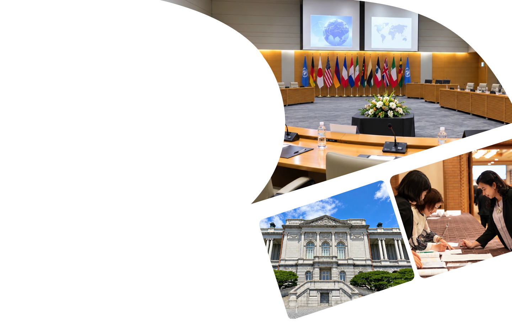
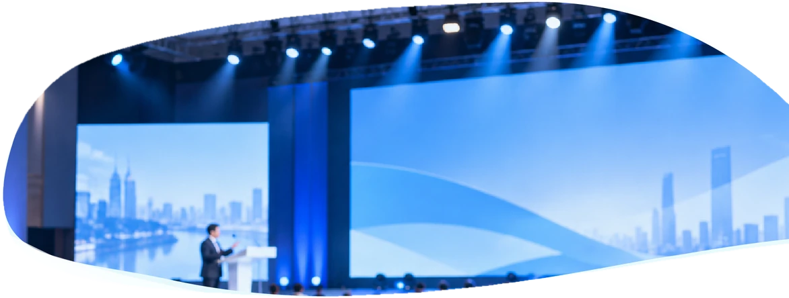
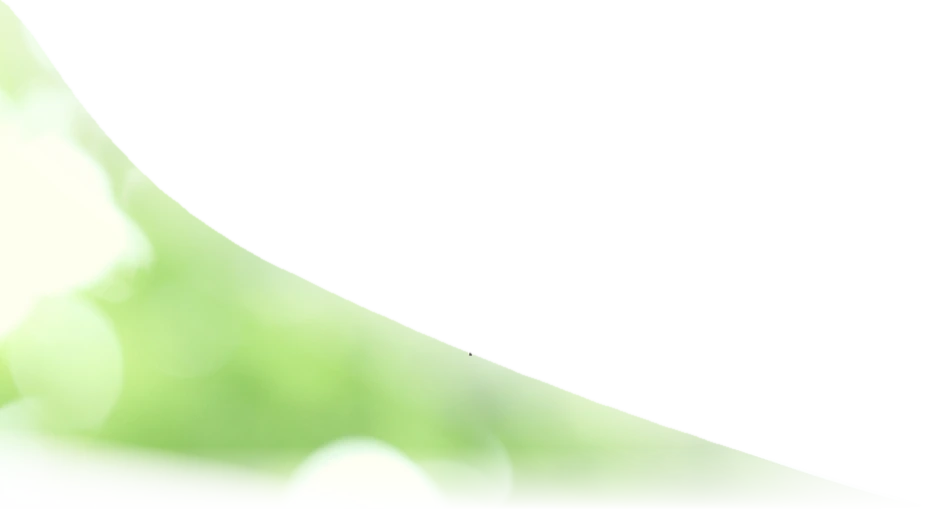

01 SERVICE
サービス内容
イベントの企画から当日の運営、
映像・音響・配信まで、
トータルでサポートします。

官公庁・自治体・企業のイベントを
企画から運営・テクニカルまで
グローパスは、官公庁・自治体・企業の
イベントを
企画から運営、映像・音響・
配信まで一貫して支える
イベントの
プロフェッショナルです。
NAME STORY
社名の「グローパス」は、Grow（育てる・
成長する）と
Pass（つなぐ・受け渡す）と
いう考え方から生まれました。
人の力、主催者の想い、
そしてイベントの
価値を次へつないでいく。
一つひとつの現場に向き合いながら、成果
へ導く姿勢を、
この名前に込めています。
ABOUT
開催目的、来場者規模、求められる演出は案件ごとに異なります。
グローパスは、主催者の意図を丁寧に整理し、
現場に合わせた進行・体制・技術を組み立てます。
TAILORED
FOR EACH STORY
それぞれの想いに、
それぞれのカタチを。
SERVICE & WORKS
サービス内容とこれまでの実績をご紹介します。
01 SERVICE
イベントの企画から当日の運営、
映像・音響・配信まで、
トータルでサポートします。

02 SERVICE
これまでに支援してきた
イベントの一例をご紹介します。
豊富な実績が私たちの強みです。

CONTACT
イベントの企画・運営に関するご相談は、
お気軽にお問い合わせください。
ご要望をお伺いし、最適な進め方をご提案いたします。